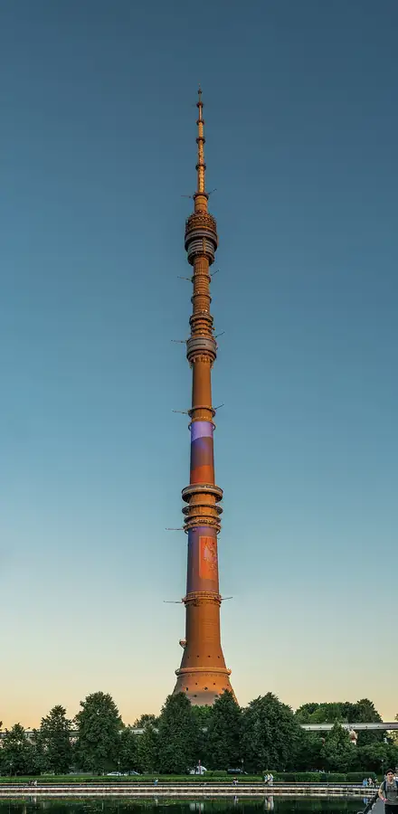

Фото: Klodklodklod77, CC BY-SA 4.0 · Wikimedia Commons
Ресторан на телебашне · СВАО
Седьмое небо
Вращающийся ресторан на Останкинской башне: за обедом вся Москва медленно проплывает за окном. Попасть можно только с билетом на смотровую площадку, бронируй заранее.
- ₽₽₽ · дороже 3 000 ₽ на человека
- Новое в каталоге
- в 1 плане
Позвать сюда: Седьмое небоОткрыть в каталоге: Седьмое небоМаршрут до места: Седьмое небо
Адрес и детали
- Адрес
- ул. Академика Королёва, 15, корп. 1
Открыть на Яндекс Картах (в новой вкладке) - Метро
- м. Бутырская
- Округ
- Северо-Восток (СВАО)
- Цена
- дороже 3 000 ₽ на человека
- Часы работы
- пн–вс 12:00–23:00 · проверили в октябре 2026
- Телефон
- +7 (495) 615-11-11
- Проверено
- работает — проверили в октябре 2026
Планы с этим местом 1
- Останкинская башня · Смотровая площадка · м. Бутырская
- 4 минуты пешкомСедьмое небо · Ресторан на телебашне
Сначала смотровая Останкинской башни со стеклянным полом, потом столик во вращающемся «Седьмом небе»: пока ужинаете, под вами медленно проплывает вся Москва. Билеты и бронь — заранее.
Открыть план: Годовщина на 337 метрахПозвать сюда: Годовщина на 337 метрах
Фото: Klodklodklod77, CC BY-SA 4.0 · Wikimedia Commons

Входит в подборки
Похожие рядом
Что ещё рядом


Как позвать
- Выбери план, место или событие — в карточке адрес, цены и маршрут в Яндекс Картах.
- Нажми «Позвать сюда» — соберётся приглашение-игра для свидания или голосование для компании.
- Отправь ссылку в любой мессенджер: тебе ответят, а компания отметит, куда и когда может. Бесплатно и без регистрации.